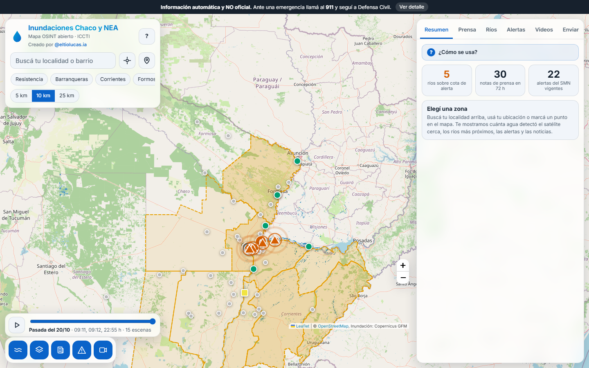
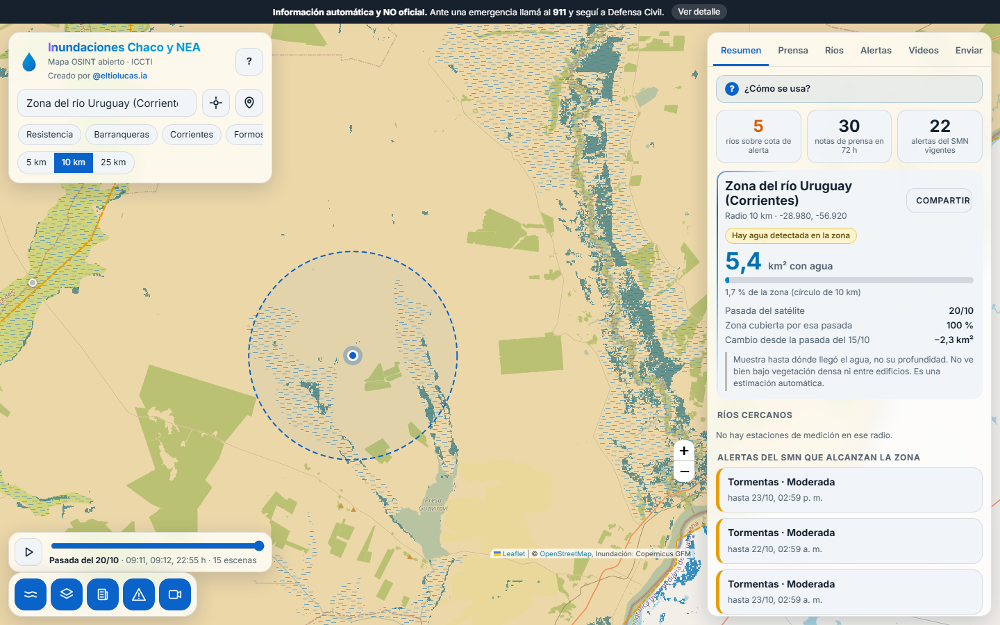
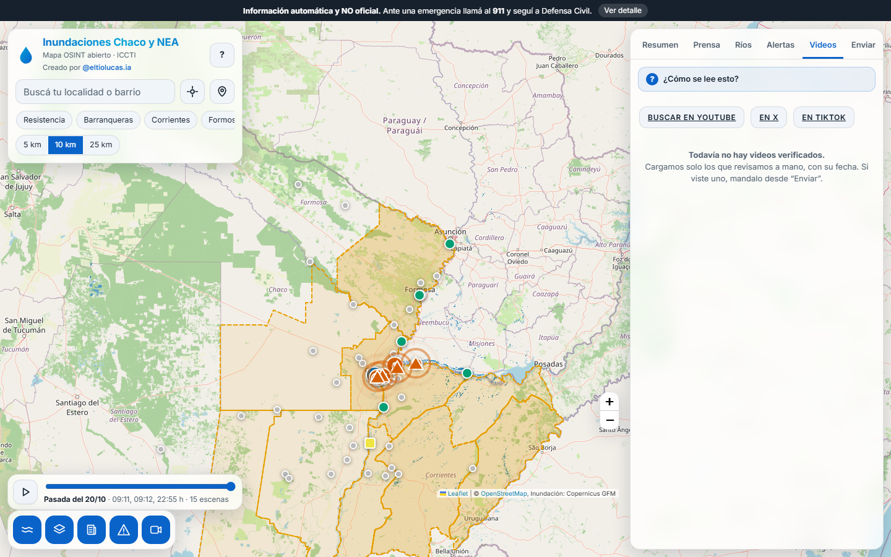
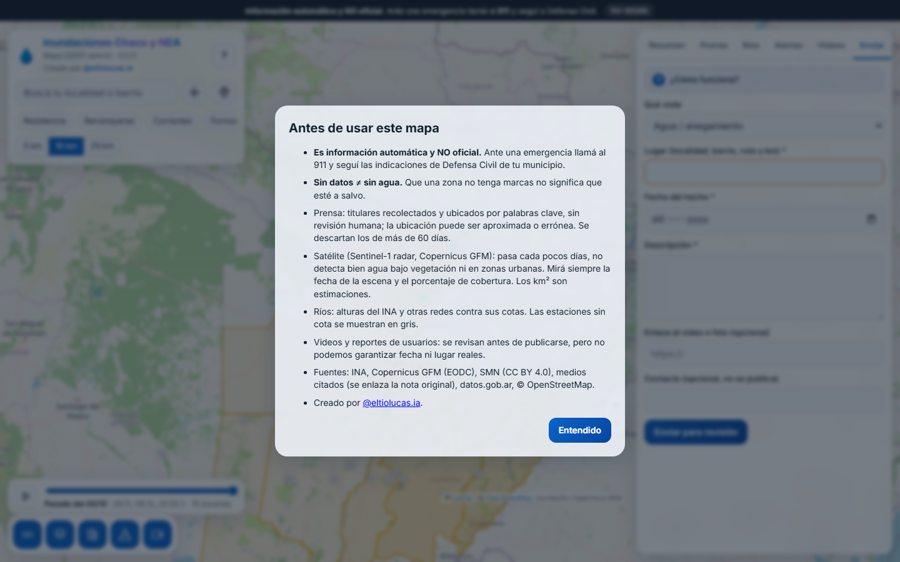

El mapa de inundaciones del Chaco y el NEA es un sitio web público que reúne en una sola pantalla las fuentes abiertas disponibles durante una emergencia hídrica: imágenes de radar del satélite Sentinel-1 procesadas por Copernicus, alturas de los ríos del INA contra sus cotas de alerta, avisos del Servicio Meteorológico Nacional, noticias de prensa ubicadas por localidad y videos que circulan, con su fecha.
La persona escribe el nombre de su localidad, elige un radio de 5, 10 o 25 km y el mapa muestra cuántos kilómetros cuadrados de agua detectó el satélite en esa zona, de qué día es la pasada y cómo cambió respecto de la anterior. Funciona en el navegador del celular, no pide registro y no necesita servidor propio para la parte de consulta.
Se solicita al ICCTI un subdominio con HTTPS para publicar los archivos estáticos y, si es posible, un proceso Python liviano para recibir y moderar los reportes de los usuarios. Las secciones 8 y 9 detallan los requisitos y lo que queda pendiente.
Durante una crecida, la información útil está repartida entre sitios que no se parecen: el INA publica alturas por estación, el SMN publica alertas por zona, los medios publican notas sin coordenadas y las redes sociales difunden videos sin fecha verificable. Un vecino que quiere saber si su barrio está en riesgo, o un equipo municipal que prioriza dónde enviar recursos, tiene que abrir cuatro o cinco sitios y cruzar los datos a mano.
La herramienta apunta a tres públicos: el público general (consulta de su zona), los municipios y Defensa Civil (panorama regional y seguimiento de ríos) y los medios y organizaciones que necesitan un mapa citable con fuentes y fechas visibles.
Las capturas son de la herramienta real, tomadas el 21 de octubre de 2026 con datos vigentes ese día.
La primera vez que alguien abre el sitio aparece un recorrido de seis pasos que señala el buscador, los botones de radio, las pestañas y el reproductor. Se puede saltar y no vuelve a mostrarse en ese navegador. El botón «?» del encabezado lo reabre.
El mapa abre sobre el Chaco y el NEA. El panel derecho muestra tres números del momento: ríos sobre su cota de alerta, notas de prensa de las últimas 72 horas y alertas del SMN vigentes. La franja superior con el aviso «Información automática y NO oficial» permanece visible en todo momento y remite al 911 y a Defensa Civil.

Se puede buscar una localidad, usar la ubicación del dispositivo o tocar un punto del mapa. El mapa se centra, dibuja el círculo del radio elegido y pinta de azul el agua detectada por el satélite. El panel indica los kilómetros cuadrados con agua, el porcentaje del círculo que representan, la fecha de la pasada del satélite, la cobertura de esa pasada y el cambio contra la pasada anterior. La zona queda guardada en el enlace, así que se puede compartir por mensaje.
En la captura, la zona del río Uruguay en Corrientes, con radio de 10 km, muestra 5,4 km² con agua (1,7 % del círculo) en la pasada del 20 de octubre, con cobertura del 100 % y una variación de −2,3 km² frente al 15 de octubre.

El reproductor de la parte inferior recorre las pasadas disponibles, hasta quince escenas, con un fundido entre una y otra. No interpola formas entre pasadas, porque eso mostraría agua que ningún satélite observó.
Lista las estaciones del INA con su altura actual, su diferencia con la cota de alerta y de evacuación, y una línea de tendencia. Las estaciones sin cota publicada se muestran en gris, para que nadie lea un dato que no existe.

Muestra titulares recolectados de Google Noticias y de medios locales, ubicados por palabras clave en la localidad que mencionan. Se publican sin revisión humana, por decisión de diseño: en una emergencia no hay tiempo de verificar cada nota. Cada nota lleva el nombre del medio, la antigüedad, un enlace a la fuente original y un filtro por tipo (evacuación, anegamiento, ruta cortada, alerta).

Presenta las alertas vigentes del SMN con su nivel, fenómeno y horario de vencimiento, el texto completo del aviso desplegable, un enlace para ver el área en el mapa y la fuente. Al elegir una zona, el panel de Resumen muestra solo las alertas que la alcanzan.

Reúne videos que circulan, siempre con la fecha de publicación a la vista. Un video entra a esta lista solo después de que una persona lo revisó. Hoy la lista está vacía a propósito: no se cargó ningún video sin comprobar. Mientras tanto la pestaña ofrece búsquedas directas en YouTube, X y TikTok.

Un formulario permite que cualquier persona informe agua, una evacuación, un camino cortado o un video. Los campos son tipo de hecho, lugar, fecha, descripción, enlace opcional y contacto opcional. Los envíos nunca se publican solos: quedan pendientes hasta que un moderador los aprueba.

El aviso aclara qué es cada fuente, sus límites y que la información es automática y no oficial. Se abre desde el encabezado y también la primera vez que se usa el sitio.

En pantallas angostas el panel pasa a una hoja inferior que se desliza, y el mapa queda visible por encima.

| Dato | Fuente | Cómo se obtiene | Licencia o condición |
|---|---|---|---|
| Agua detectada | Copernicus Global Flood Monitoring, vía el servicio de mosaicos del EODC | El navegador pide los mosaicos y cuenta los píxeles de agua | Datos abiertos de Copernicus. Servicio de terceros, sin garantía de disponibilidad |
| Alturas de ríos | INA | Script de actualización | El INA no declara licencia. Conviene consultarla antes de un uso institucional amplio |
| Alertas | Servicio Meteorológico Nacional | Script de actualización | CC BY 4.0, con atribución en el sitio |
| Prensa | Google Noticias y RSS de medios locales | Script de actualización, con ubicación por palabras clave | Solo se muestran titulares y enlaces a la fuente original |
| Localidades | Archivo propio (123 localidades y departamentos), Georef de datos.gob.ar y Nominatim de OpenStreetMap | Búsqueda en ese orden | Georef y OpenStreetMap, con atribución |
| Mapa base | OpenStreetMap | Mosaicos públicos | Política de uso de OSM. Para tráfico alto se necesita un proveedor propio |
El navegador pide a Copernicus los mosaicos sin color de la zona elegida. En esos mosaicos, un píxel con valor 1 en el canal rojo es agua y un píxel con transparencia total es una zona sin dato. Con eso el sitio calcula la superficie con agua y el porcentaje de la zona que la pasada cubrió. El cálculo tarda entre 15 y 25 segundos con radios de 10 y 25 km, porque retrocede hasta ocho pasadas buscando las dos más recientes que cubran al menos el 10 % de la zona.
| Contenido | Tratamiento |
|---|---|
| Satélite, ríos y alertas | Automático, con fecha y hora de cada capa. Pasadas 12 horas sin actualizar, la capa se marca «DATO VIEJO». |
| Prensa | Publicación automática, sin revisión, con aviso permanente de que no está verificada. |
| Videos | Solo después de revisión humana, con fecha de publicación y enlace a la fuente. Se busca el mismo video en fechas anteriores, porque circulan clips reciclados. |
| Reportes de usuarios | Cola de moderación. Nada se publica sin aprobación. |
El aviso «Información automática y NO oficial. Ante una emergencia llamá al 911 y seguí a Defensa Civil» ocupa una franja fija en la parte superior. El texto del aviso legal todavía no pasó por una revisión jurídica.
Se copian index.html, estilo.css, app.js y la carpeta data/. El código propio pesa unos 75 KB y los datos unos 210 KB sin comprimir, además de la biblioteca Leaflet y los mosaicos del mapa que se cargan desde otros servidores. Con esta opción, el formulario necesita un destino externo (un servicio de formularios o un correo) que se configura en una línea del código.
El archivo servidor.py usa solo la biblioteca estándar de Python 3 y SQLite. Recibe los reportes, los guarda en un archivo envios.db y ofrece una página de moderación. Si se aprueba un envío con un enlace de YouTube, lo agrega a la lista de videos. Corre detrás del proxy inverso del ICCTI, que aporta el HTTPS.
El script actualizar.py regenera los archivos de datos y también usa solo la biblioteca estándar. Se programa con cron: prensa, ríos y alertas cada 30 a 60 minutos, satélite cada 6 horas. Si una fuente falla, se conserva el archivo anterior y el sitio muestra su hora.
| Tema | Estado |
|---|---|
| Funcionamiento | Probado en una computadora y en un celular emulado: búsqueda, pestañas, reproductor, recorrido guiado, errores del formulario. No se probó en celulares reales de gama baja ni con conexión 3G. |
| Servidor de reportes | Verificado con su prueba automática. No se probó de punta a punta desde el formulario en un servidor real. |
| Destino del formulario | Sin configurar. Hay que elegir la opción A o B antes de publicar. |
| Videos | Lista vacía. Requiere una persona que revise y cargue. |
| Mapa base | Usa los mosaicos públicos de OpenStreetMap, que no están pensados para mucho tráfico. |
| Cobertura de datos | Hay datos en la caja entre 29,1° y 23,9° de latitud sur y entre 62,9° y 57,2° de longitud oeste. El mapa permite navegar toda Argentina, pero fuera de esa caja no hay datos. |
| Certificados | Los sitios del INA, el SMN y chacodiapordia tenían certificados vencidos al momento de la prueba. El script reintenta sin verificar el certificado para esas lecturas públicas. Conviene avisar a esos organismos. |
| Aspectos legales | El aviso legal no tuvo revisión jurídica. La licencia de los datos del INA no está declarada. |
| Funciones futuras | Relieve y altimetría, vista operativa para Defensa Civil, pronóstico del INA, vista pública de reportes aprobados. |
El código completo, la documentación de instalación y los documentos de investigación que dieron origen al proyecto están en el repositorio público github.com/LucassToledo/mapa-inundaciones-nea. Cualquier organismo puede revisarlo, copiarlo y auditarlo.
Autor: Lucas Toledo, @eltiolucas.ia en Instagram.
Documento generado a partir de la versión del proyecto del 21 de octubre de 2026. Las cifras de las capturas corresponden a los datos de ese día y cambian con cada actualización.